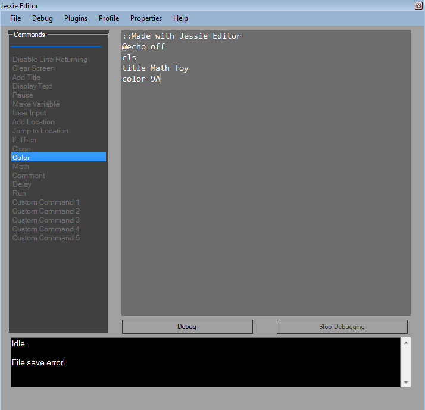
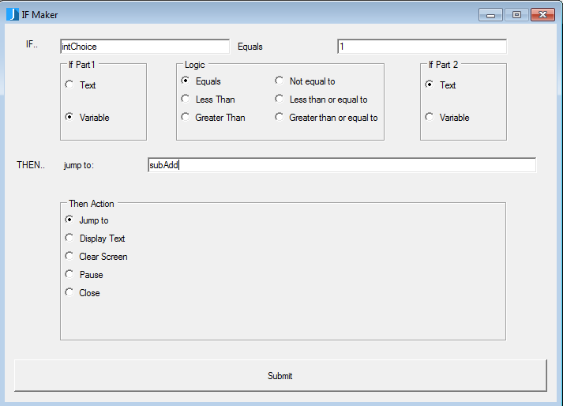
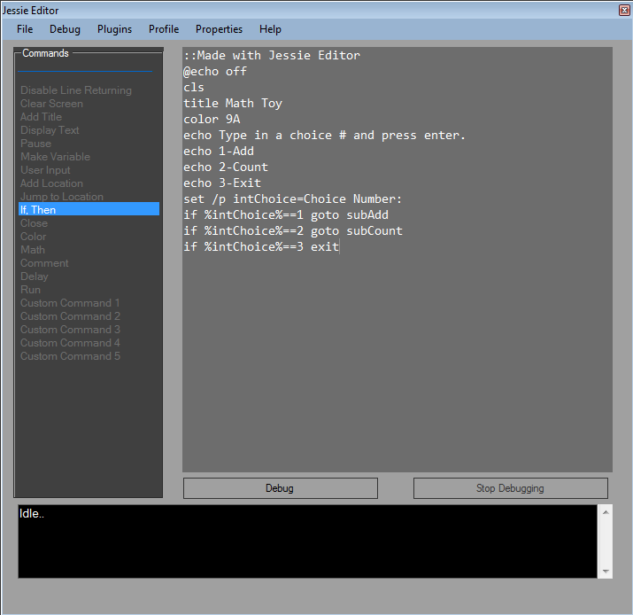
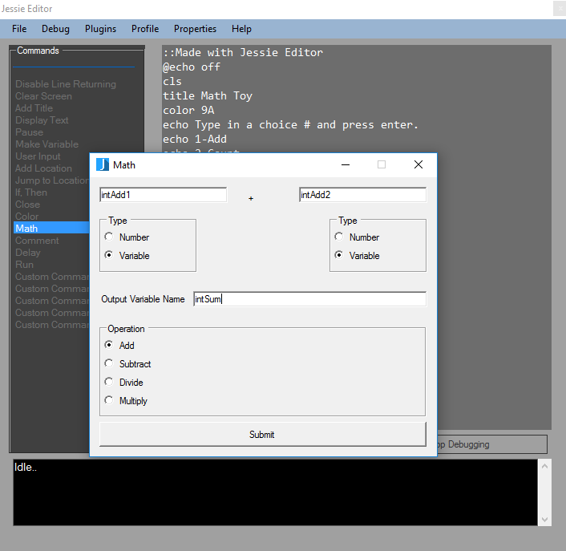

Example Program
This is a mini tutorial that will help you create a program using all of the commands in Jessie Editor.
To start click the File tab in Jessie Editor and select new. This will create a new code project for you.
What the end results of this project will be a number program that can count and do addition math problems and count.
For the first command click the "disable line returning" and then the "clear screen" command, these commands
will prevent your program from displaying all the code when running and it will clear the screen.
Next to make our program look more appealing, click the "Add title" command. This command allows users
to make their program have a title. Type in the textbox "Math Toy" and click ok. Now we want to add some color
to make it look better. Click the color command. Select two colors of your choice and click ok. We will choose
light blue for background color and light green for text color. Your program should look like this:

Next we will create a menu of choices for the user to choose from. To do this we first have to display the choices.
Click on the display text command and type in "Type in a choice # and press enter." then click submit. Repeat the display
text command with each one of these text items:
- "1-Add"
- "2-Counter"
- "3-Exit"
Once you have added these text options, we will ask the user for a choice. To add this command, click the user input command.
A dialog box will appear asking for a Variable Name and a User Input Question. For the Variable Name, we will create a variable
that
whatever the user types in, it will be stored as that variable. Type in
the Variable Name textbox "intChoice" . Next we will ask
the user
for a number input. In the User Input Question type "Number Choice:"
and then click the submit button. Then we will test to
see what
value the user entered and jump to the following point. To do this we
will create an If statement. Click the If,Then command.
A dialog box will appear. Enter the following values show in this picture then click ok.

Next Repeat this command for each of these values.
| If | If Part 1 | Logic | If(2) | If Part 2 | Then Action | Then Extra(Optional) |
| intChoice | Variable | Equals | 2 | Text | Jump To | subCount |
| intChoice | Variable | Equals | 3 | Text | Close | |
Once done your program should look like this.

We also have to make sure that if a user inputs a choice besides one of our options that they will be notified about there
error.
To do this click the display text command and enter the text "Invalid
input!" and click Submit. Then add the pause command
which will
pause the program till they press a key, then click the close command
to end the program if they entered invalid input.
Now it's time to work on the add and count commands. Lets start with the add command. Click the add location command.
In the input box type subAdd and click ok. This will add the subAdd command that we jumped to if the user entered "1".
Add two user input commands with the following values:
| Variable Name | User Input Question |
| intAdd1 | Input a number: |
| intAdd2 | Input a second number. |
These
commands will ask the user to input two numbers and store them in
variables. Now to add them. Click the math command and the math dialog
will
appear. Enter the following values then click submit.

This
will add the add command. To display the sum click the display command
and enter intSum and check the variable checkbox, then click submit.
Also
to make sure that the program will show output, click the pause command
andthen the close command. Finally we will practice adding open source
code.
Copy and paste this code to the bottom of the code.
:subCount
set /p intCount=How high do you want to count:
:count
echo %intCount%
set /a intCount=%intCount% - 1
if %intCount%==0 goto end
goto count
:end
echo Done!
pause
exit
Congratulations! You have sucessfully written a full program. To run it click the debug button.
You can now save or print it using the file menu.
back